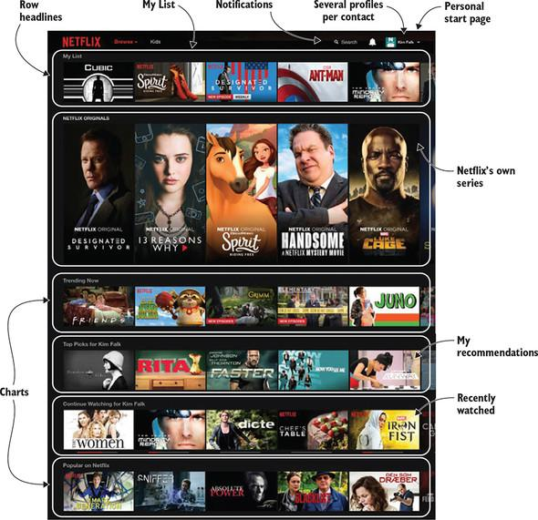
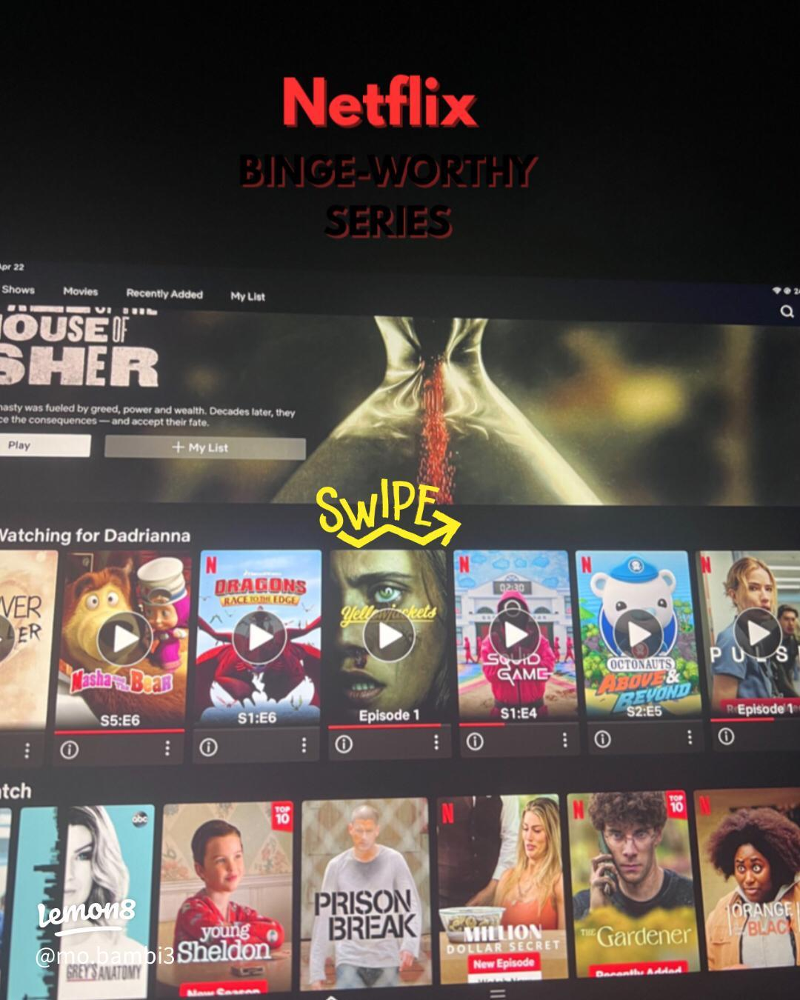
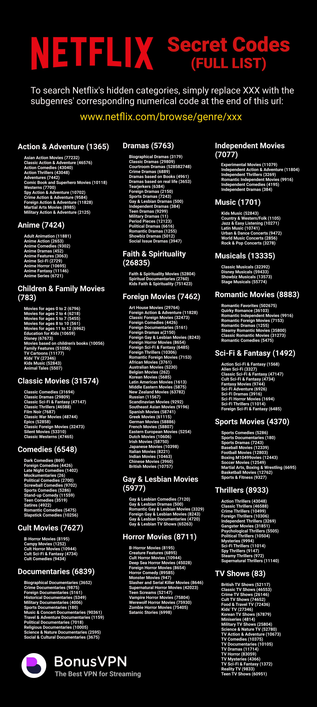
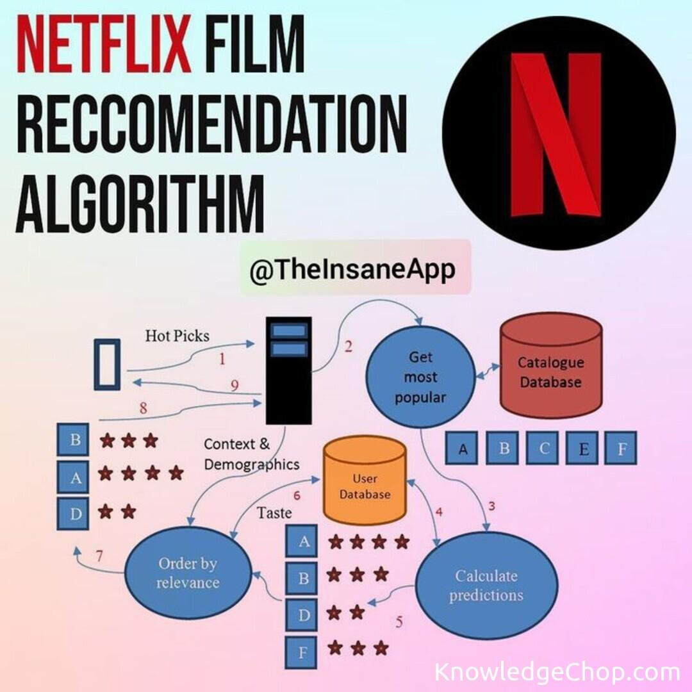

Netflix — Master of Retention
Netflix doesn't sell movies; Netflix sells attention. Discover how algorithmic personalization, psychological loops, and hyper-segmented UI engineering created the ultimate "Binge-Watching" retention moat.

The "First Month Free" Bridge
Before Netflix became a household utility, they utilized a brilliant acquisition-to-retention bridge: The Free 30-Day Trial.
By asking for a credit card upfront but charging nothing, they eliminated financial friction. The goal was simple: use those 30 days to collect enough viewing data to personalize the home screen so accurately that, by day 31, canceling felt like losing a curated part of your identity. It shifted the product challenge from Acquisition to pure Retention.
The Psychology of Bingeing
Netflix engineered its UX based on deep behavioral psychology. Every pixel is designed to keep users in the platform ecosystem.

Endowed Progress & Autoplay
The "Next episode starts in 5..." countdown removes the decision to keep watching. By automatically rolling users into the next episode, Netflix creates momentum. The psychological principle of Endowed Progress makes users feel that stopping halfway through a season is "losing" their invested time.
90-Second Display Previews
Decision paralysis is the enemy of retention. Netflix counters this with auto-playing trailers when hovering over a title. These highly optimized 90-second previews instantly demonstrate value, pulling the user into the narrative before they even have a chance to debate watching it.

Personal Identity & Micro-Genres
Netflix doesn't just recommend "Comedies." They recommend "Quirky Romantic Comedies with a Strong Female Lead." By hyper-segmenting content into thousands of micro-genres (often accessed via secret numerical codes), users subconsciously associate these niche rows with their own personal identity, making the platform feel intimately built for them.

The Algorithmic Moat
Netflix’s competitive advantage is its data flywheel. Competitors can buy the same movies, but they cannot buy the exact viewing preferences of 200+ million global subscribers.
The Retention Engine
Product Analyst Dashboard
Core Retention KPIs
| Metric | Definition | Target |
|---|---|---|
| DAU / MAU Ratio | Daily Active Users divided by Monthly Active Users (measures habituation). | Maximize |
| Total Watch Hours | Total volume of content consumed per user per billing cycle. | Maximize |
| Content Completion Rate | Percentage of initiated shows/movies that are watched to 90%+ completion. | Maximize |
| Voluntary Churn Rate | Percentage of users actively canceling their subscriptions monthly. | Minimize |
Analyst Insights
Churn Prediction
Declining session frequency is the strongest leading indicator of churn. Netflix proactively combats this by tracking deviations from historical viewing baselines, using those drops to trigger highly personalized re-engagement emails before a user decides to cancel.
Recommendation Effectiveness
The ultimate proof of Netflix's retention moat is their search-to-recommendation ratio. The vast majority of total watch hours originate directly from algorithmic rows (like "Top Picks") rather than manual search, indicating immense product trust and zero decision fatigue.
Engagement Depth
Retention isn't just driven by daily logins; it relies heavily on session length. By deploying auto-playing 90-second trailers, Netflix effectively converts passive "browsers" into active "watchers," drastically lowering the 'Time to First Play' metric and extending total watch hours.